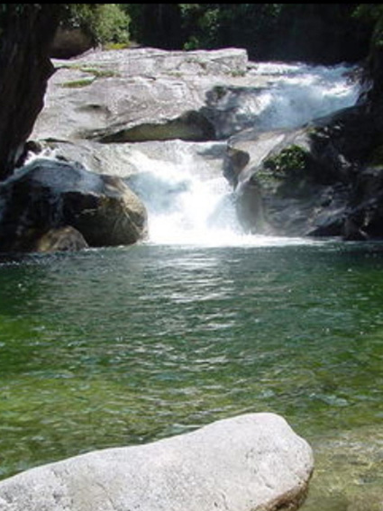

Pontos Turísticos e Históricos
Fazenda São Bernardino
Endereço: Estr. Federal de Tinguá, 2023 - Barão de Guandu, Nova Iguaçu - RJ, 26062-400. A fazenda foi construída no estilo neoclássico em 1875 e tombada como patrimônio histórico pelo Instituto do Patrimônio Histórico e Artístico Nacional (Iphan) em 1951. Contava com Casa Grande, senzala e engenhos para cana-de-açúcar e, é claro, aipim. Em 1976, a propriedade foi abandonada e passou a sofrer uma série de saques. Por consequência, na década de 80 a Fazenda São Bernardinho sofreu um incêndio, destruindo quase toda sua estrutura.
Vila de Iguassú
Endereço: Estr. Federal de Tinguá, 2023 - Barão de Guandu, Nova Iguaçu - RJ, 26062-400. Seguindo pela Estrada Zumbi dos Palmares é possível visitar mais monumentos históricos, como Conjunto Urbano da Extinta Vila de Iguaçu, tombado pelo Instituto Estadual do Patrimônio Cultural (Inepac) em 1978. O conjunto conta com o Porto da Vila de Iguassu (grafia da época), a Torre da Igreja de Nossa Senhora da Piedade de Iguassu e os cemitérios Nossa Senhora do Rosário e dos Escravos. Todos eles estão passando por um grande processo de revitalização desde 2021.
Antiga Estrada Real do Comércio
Endereço: Estrada Velha de Minas, Iguassú Velho - Nova Iguaçu. AA Estrada Real do Comércio é uma antiga estrada construída no século XIX e tombada pelo IPHAN, cujos resquícios ainda podem ser vistos nos municípios de Nova Iguaçu e Miguel Pereira. O trajeto original ficou pronto em 1822, começava na Vila de Nossa Senhora da Piedade do Iguaçu, subia a Serra do Tinguá e chegava até o Porto de Ubá, hoje o distrito Andrade Pinto, em Vassouras. Além das margens do Rio Paraíba do Sul, por fim encaminhando para Minas Gerais ou Goiás.

Cachoeiras da Rebio Tinguá
Contudo, talvez a atração mais movimentada de Tinguá seja as belezas naturais da Reserva Biológica (Rebio) do Tinguá. Ela é considerada Patrimônio Mundial Natural pela Unesco em 1999. A Rebio conta com mais de 25 hectares, o local conta com cachoeiras, trilhas e diversas espécies arbóreas, de mamíferos, aves e peixes. Muitas das quedas de águas do bairro estão em propriedades particulares, transformadas em sítios. Por isso, é comum o trânsito de iguaçuanos para os sítios de Tinguá no verão.
Estação da Cultura de Tinguá
Endereço: Rua Nossa Senhora da Conceição, nº 234, Tinguá - Nova Iguaçu. A Antiga Estação Ferroviária de Tinguá em Nova Iguaçu-RJ foi tombada por sua importância cultural para a cidade. São as antigas estaçõezinhas ferroviárias Tinguá, Jaceruba, Cava e Rio D`Ouro, cujo ramais encontram-se desativados, mas que permanecem presentes nesses lugarejos com sua arquitetura característica Estação ferroviária típica do início do século XX, tinha uma entrada para a rua e outra para a via férrea, hoje desativada. Esse é um dos bens culturais que estão na lista de marcos significativos do patrimônio cultural da região.
Estação da Cultura Rio D'Ouro
Endereço: Rua da Represa, n° 259 – Nova Iguaçu – RJ. A Antiga Estação Ferroviária de Rio D’Ouro em Nova Iguaçu-RJ foi tombada por sua importância cultural para a cidade. A necessidade de manutenção do sistema de captação de águas no antigo município de Nova Iguaçu, destinada ao abastecimento da cidade do Rio de Janeiro, deu origem ao Ramal Ferroviário de Rio D’Ouro. Esta construção típica da arquitetura das estações ferroviárias do inicio do século XX, com frontões nas laterais, está situada no centro da localidade de Rio d’Ouro. Tem a data 1916 inscrita na fachada.
